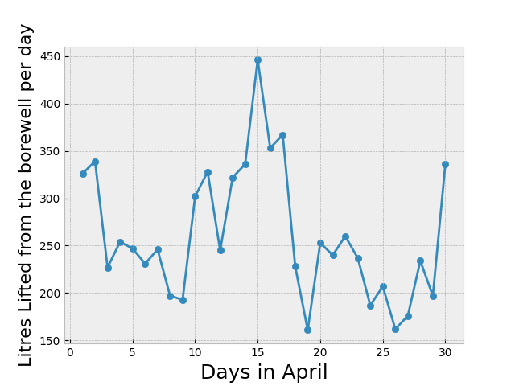
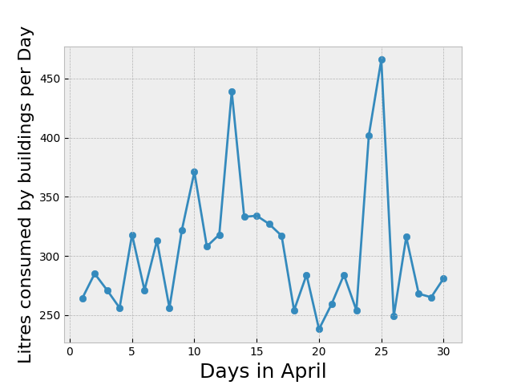

Dashboard

Lifting Water Consumption from Borewells
This data contains the amount of water being lifted by the Borewells of the campus for the month of April, which gives us an insight of how much water is being pumped up everyday and come up with measures to minimize this.
